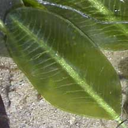
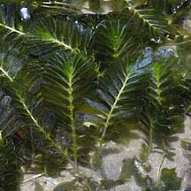
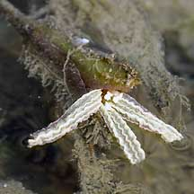
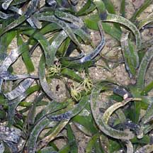
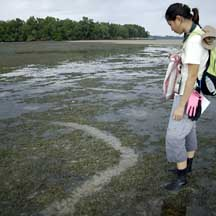
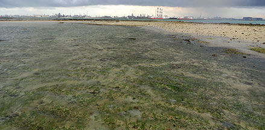
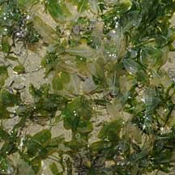
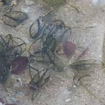
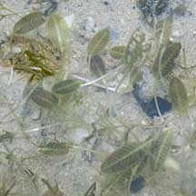

|
|
|
seagrasses
text index | photo
index
|
| ecosystems | rocky | sandy | seagrass | coral rubble | coral reef |
| Seagrasses Family Cymodoceaceae and Family Hydrocharitaceae updated Dec 2019
Where seen? Seagrasses are found on almost all our shores. Undisturbed shores tend to have more luxuriant growths, but any natural shore is likely to have some, albeit sparse, growths of seagrasses. Where they grow thickly, our seagrass meadows are like underwater forests, teeming with life! What are seagrasses? Seagrasses are the only flowering plants adapted to grow submerged in the sea. Seagrasses generally grow in intertidal areas to depths of 30m. Seagrasses do not belong to the same family of plants as the land grasses (Family Graminae). Despite the name, the leaves of seagrasses are not always grass-like. Seagrasses in Singapore belong to either the Family Cymodoceaceae or Family Hydrocharitaceae. |
 Lush seagrass meadows at East Coast Park, Feb 2019 |
| Features: Like other 'normal'
land plants, seagrasses have green leaves where photosynthesis takes
place. These leaves have veins to transport water around (called a
vascular system). Seagrass leaves emerge from rhizomes (underground stems). These rhizomes spread along the soft sediments. Roots anchor the plant. Thus seagrass form a firm mat over the sea bottom. Unlike land plants, seagrass absorb water and nutrients through all parts of the plant, not just the roots. Seagrasses also have air canals in their leaves and rhizomes so they can 'breathe' while underwater. Sometimes confused with green seaweeds. Unlike seagrasses, seaweeds lack veins, roots that absorb nutrients, and do not produce flowers or fruits. Here's more on how to apart seagrasses and green seaweeds. |
 Seagrass leaves have veins. Chek Jawa, Jul 02 |
 Seagrass have underground stems with roots Chek Jawa, Aug 05 |
 Fern seagrass has a leaf made up of little leaflets Chek Jawa, Jun 05 |
| Seagrass flowers: Seagrass flowers
are usually small and inconspicuous. Water plays a big role in pollination. One study of a temperate seagrass (not found in Singapore) suggest that they may be pollinated by zooplankton and tiny bottom dwelling animals.
Their seeds are also dispersed by water. In some species, the same
plant produces male and female flowers. In others, male and female
flowers are produced in separate plants. However, seagrasses seldom flower. They spread mainly through vegetative reproduction through their underground rhizomes. Thus seagrasses do not easily colonise new places. Seagrasses need the sea: Seagrasses dry out easily because, unlike land plants, their leaves and stems lack a waxy covering. They can tolerate short periods out of water, but must be submerged most of the time. Keep off the grass! Seagrasses can rapidly regrow their leaves. However, if their underground stems are damaged, it takes them longer to recover. So please do not step on the seagrasses. |
 Flowering Spoon seagrass? Changi, Apr 05 |
 Female flower of Tape seagrass with tiny male flowers in the centre. Pulau Semakau, Mar 05 |
 Flowers of the Sickle seagrass Labrador, Mar 06 |
| Role of seagrasses: Seagrass meadows
are a vital habitat that is often overlooked and loses out in media
coverage to the more glamorous reefs. The meadows of seagrass leaves create a miniature underwater forest. A host of small plants and animals thrive in these thickets. Seagrasses provide shelter for many animals that are not adapted for fast swimming (e.g., the seahorse and filefish). These include juveniles of larger fishes and animals that later move out into deeper waters and include commercially important fishes and sea creatures. Seagrass leaves also provide a place for animals to lay their eggs, and for small animals to settle down. |

| The Star
Trackers have noted that the seagrass meadows on Cyrene Reef are
important and possibly the only habitat left in Singapore where baby Knobbly
sea stars (Protoreaster nodosus) can be found in large
numbers. The underground stems and roots of seagrasses form a mat which stabilises the ground, while their leaves slow the water flow and thus help keep sediments down and the water clear. The leaves also trap sediments and detritus and contribute to the nutrient cycle in the ecosystem. In the stabilised ground, many burrowing creatures make their homes. Few animals can eat seagrasses, because few can digest the cellulose that makes up these plants. Among those that do feed on seagrasses are the sea turtles such as the Green turtle (Chelonia mydas) and Hawksbill turtle (Eretmochelys imbricata) as well as the Dugong (Dugong dugon). |
 A fresh dugong feeding trail! Chek Jawa, Jan 07 |
 Dugong feeding trails Cyrene Reef, May 19 |
| However, seagrasses do provide food indirectly. Microscopic algae
grow on their leaves and larger seaweeds get entangled among the seagrasses.
Many small animals graze on these algae. They are in turn eaten by
larger animals. In this way, seagrasses are an important part of the
food chain in other ecosystems nearby, such as sandy shores, mangroves
and coral reefs. Seagrass meadows are vital part of a rich and diverse shore. Dead seagrass leaves as they decay, provide nutrients to other ecosystems. By trapping sediments, the meadows keep the water clear for coral reefs to develop nearby. The stabilised areas where seagrasses grow may eventually be colonised by mangroves. According the Seagrass-Watch site, seagrass meadows are considered the third most valuable ecosystem globally. The average value of seagrasses for their nutrient cycling services and the raw product they provide has been estimated at US$ 19,004 per hectare per year (1994). This value would be significantly greater if the other services of seagrasses were included. Human uses: In Southeast Asia, especially in the Philippines, seagrasses are used in all kinds of ways. They are woven into baskets, used to thatch roofs, stuffed into mattresses and used a fertiliser. A durable fibre useful for fishing nets is also made from the Tape seagrass (Enhalus acoroides). Modern rugs are also woven out of seagrasses. Status and threats: All our seagrasses are listed among the threatened plants of Singapore. Seagrasses are affected by careless visitors who may unknowingly trample on their delicate underground stems. Nets dragged over seagrasses also uproot them and kill the animals that live there. Marine litter (plastic bags and other rubbish) smother seagrasses. They may also trap and kill small animals. Larger animals may accidentally eat them and die. Seagrasses are also affected by pollution that poison the water. Activities that stir up sediments also obscure sunlight and affects photosynthesis and thus the growth of seagrasses. |
|
 Bleaching following oil spill in May 10. Chek Jawa, Jun 10 |
 Bleaching, cause unknown. Sentosa, Apr 11 |
 Burnt, cause unknown. Sentosa, Apr 11 |
| However, the most damaging impact to seagrasses is habitat loss due
to land reclamation and development of our shores. Seagrasses grow
best on flats that are shallow but seldom totally out of water, and
relatively calm. Too deep and there is not enough sunlight for photosynthesis;
too shallow and the seagrasses are regularly out of water. Reclamation
usually results in steeply sloping shores where seagrasses don't grow
well. Where are the animals in the seagrass meadows? Many are well camouflaged or hide in burrows. Some are tiny. Look carefully and avoid stepping on lush patches of seagrasses. Where can we explore seagrass meadows in Singapore? Labrador has the last large mainland seagrass meadows. There are also narrow and patchy seagrass areas at Changi. Among our northern islands, there are vast seagrass meadows at Chek Jawa on Pulau Ubin. While on our Southern islands, there are extensive seagrass meadows at Pulau Semakau and some at Sentosa. |
| Photos of seagrasses on Singapore shores |
| On wildsingapore
flickr for free download. |
| Seagrasses
on Singapore shores from Wee Y.C. and Peter K. L. Ng. 1994. A First Look at Biodiversity in Singapore. *in red are those listed among the threatened plants of Singapore from Davison, G.W. H. and P. K. L. Ng and Ho Hua Chew, 2008. The Singapore Red Data Book: Threatened plants and animals of Singapore. +from NParks BIodiversity Centre ^from WORMS
|
Links
|
|
You CAN make a difference for Singapore's seagrasses!  |